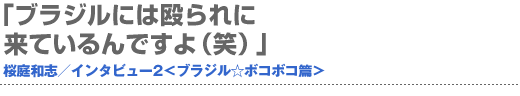
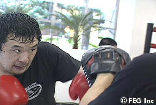
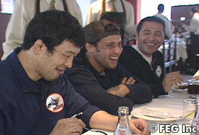
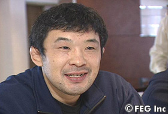
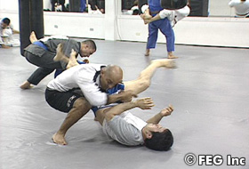
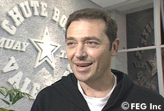
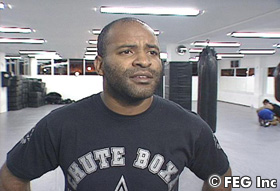

『SoftBank presents Dynamite!! USA in association with ProElite』（6月2日＝現地時間、アメリカ／ロサンゼルス・メモリアル・コロシアム）でホイス・グレイシーと対戦する桜庭和志は、4月下旬から1ヵ月弱、ブラジルのシュート・ボクセ・アカデミーにて修行を敢行した。シュート・ボクセ関係者のコメントと併せ、現地での直撃インタビューをお届けする！
目玉焼きとか、すごく美味しいです！
 ──ブラジルの食べ物はいかがですか？
桜庭 おいしいですよ。卵が一番おいしいですね。目玉焼きとかにすると、すごく美味しいんです。
──日本の卵とは違うんですか？
桜庭 もうぜんぜん違います、こっちのほうがおいしいです。
──栄養のバランスとかを考えて食べているんですか？
桜庭 いや、食べたいものを食べてるって感じですね。で、なんかちょっと、例えば「甘いものを食べ過ぎたなぁ」と思ったら、ちょっと控えたりとか。あんまりこだわってないですよ。
──練習場所にブラジルを選んだ理由は何ですか？
桜庭 特にブラジルだからというこだわりではなくて、フジマール（・フェデリコ、シュート・ボクセ・アカデミー会長）さんが好きですし、ヴァンダレイ（・シウバ）と試合をした時に「一度ブラジルのシュート・ボクセに練習に来なよ」と誘われていたので。ボクがここに練習しに来るのは、やられるために来ているんですよ。ボコボコに殴られに来ているので、すごくやられるのが楽しいというか（笑）。
コミュニケーションは殴り合いで
 ──テクニック面での習得はどうですか。
桜庭 テクニックも、やっぱりいろんな選手がいっぱいいますので、その個人個人違うテクニックがあるので、やられながら盗んでいくというか。そういう練習をしたいなぁと思うんです。
──シュート・ボクセの仲間達とのコミュニケーションはどのように取っているのですか？
桜庭 コミュニケーション？ それはもう、殴り合ってコミュニケーションを取っています。殴り合ってというか、ボクは殴ってないんですけど（笑）。
──ブラジルでの一日はどんなサイクルで過ごしていらっしゃるのでしょうか？
桜庭 一日3回練習しています。朝、昼、晩。ほぼ毎日ですね。やっぱり疲れがあまりにも溜まっているときには休ませてもらいますけど。
──ブラジルの生活で困ったことってありますか。
桜庭 特にはないですね。食べ物も合うし、特にありません。ブラジルでは格闘技だけに集中していますから。
──ブラジルでの楽しみってあるんですか？
桜庭 練習に集中できるのが楽しいですね。あと、練習が終わってちょっとお酒を飲むのとかも楽しいし。
明日の練習をどうやってごまかそうかと…
 ──ホイス戦について聞きたいんですけど、試合まで刻一刻と近づいてきていますが、現在の心境を教えてください。
桜庭 試合のことはまだ全然頭になくて、「明日の練習をどうやってごまかそうかなぁ？」とか、そういうことしか考えていません（笑）。
──ごまかす？
桜庭 練習は好きですけども、例えば今日なんか2時間ぐらい練習をやっていたじゃないですか。正直言って2時間も集中なんかできないですよ。だから、その2時間なり、3時間の練習の中で、どこでどう集中するか。20分でも30分でもいいからガーっと集中してやれば、それは身に付く。だけど、ずっとは集中していられないので、それをどうやってごまかそうかなというのを考えています。
ホイス対策？ 全然しませんね☆
 ──例えば、練習の中でホイス戦用の練習を取り入れたりはしないんですか？
桜庭 それはもう全然しませんね。相手が誰とかじゃなくて、要は自分の技術ですから。自分に足りないものを身につけたいなと。
──今までもそうでしたか？
桜庭 そうですね。相手によって、試合の仕方は変わってきますけど、練習は変わらないです。だから試合前も相手のビデオは2、3回ぐらいしか見ないんです。相手がどうとかじゃなく、自分がどうにかすればどうにかなるんじゃないかなぁという感じですね。
──桜庭選手が苛酷なリングで闘いに続ける理由は何ですか？
桜庭 見ているほうは苛酷とかそういうふうに感じるのかもしれないですけど、やっているボク自身としては特に過酷とか、そういうものは何もないんですよ。試合の相手が何を出してくるとか、その読み合いとか緊張感とかが楽しくてやっているだけです。
──なるほど。では、最後にファンへメッセージをお願いします。
桜庭 （突然）うおっ！ ちょっ……ちょっと待ってください！（手をブンブンと振りながら）。ここ、すごい虫が飛んでいますね（苦笑）。……で、何でしたっけ？（笑）。
──メッセージです（笑）。
桜庭 ボクも頑張りますので、皆さんも頑張ってください。■
【フジマール・フェデリコ会長のコメント】
 「桜庭は素晴らしいファイターだよ。格闘技の天才であり、格闘技のスペシャリストでもある。どんな技を使ってでも相手を圧倒させられる選手だよ。それが桜庭の最大の長所だと思うね。相手は予測できないんだ。（人間としての桜庭選手については？）とても面白くて、とても良い人で、とても明るい。我々と桜庭は家族や親友のように、とても親密な関係を築いた。だからクリチーバで家を買うように説得しているんだよ。なぜなら、クリチーバに家を買えば、もっと楽にジムへ通えるだろ？（笑）。桜庭が我々と一緒に練習することは、桜庭だけでなく、我々もレベルアップしているんだ。なぜなら、いろんな技術を持ってきてくれるからね。だから、この関係、この交流は両者にとってプラスになっているんだ。（桜庭vsホイスはどのような展開になると思いますか？）桜庭がパンチで攻め立てる展開になるだろう。きっと桜庭は"グレイシー・ハンター"であり続ける。ハッキリ言うと、ホイスが桜庭に勝つ見込みは、まずない。今回は短い試合になると思うよ。桜庭、頑張って！」
【ハファエル・コルデイロコーチのコメント】
 「桜庭は本物の日本の侍だ。我々は、桜庭がこのジムの一員であることをとても誇りに思っている。絶対に諦めないという点で、我々と桜庭は似ているんだ。それに桜庭選手はすごく丈夫で、技を受けるのがとてもうまい。だから、試合を長引かせて、攻めるタイミングを見つけるために必要な時間を作ることができるんだ。（人間としての桜庭選手は？）面白いし、楽しい。いつもジョークを言っているから、ずっと前からシュート・ボクセの一員だったかのようだよ。（桜庭vsホイスはどのような展開になると思いますか？）ホイスも、桜庭やヴァンダレイ（・シウバ）のように、このスポーツの歴史に名を残しているファイター。だからホイスを甘く見てはいないけど、勝つのは桜庭だよ。（桜庭選手にメッセージをお願いします）シュート・ボクセ・アカデミーはどんな時も君と一緒だ。幸せなとき、勝利のとき、悲しいとき、辛いとき、どんな時でも一緒だということを忘れないでくれ。格闘技にとって歴史的な一日に、君はK-1を、そしてシュート・ボクセを代表して出場する。必ず勝利を掴むと信じているよ！」 |